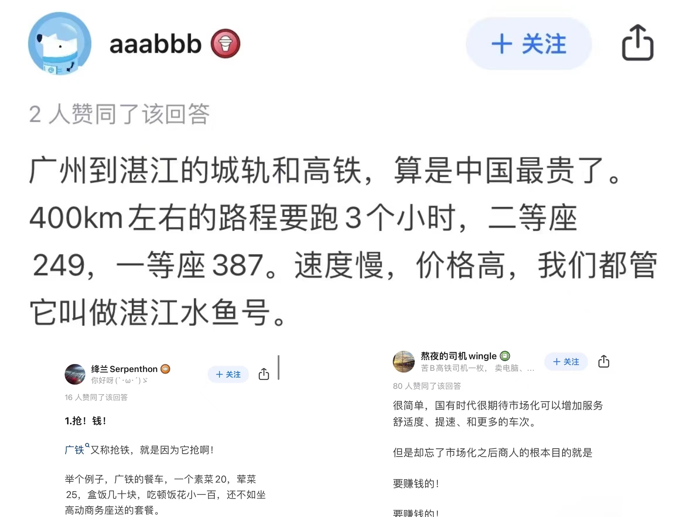

转眼，五一“小长假”结束。假期最后一天，旅客纷繁踏上返程旅途，广州铁路迎来返程客流小顶峰，客流出现周边城市中小城市向中心大城市回流的态势。小何（化名）正是返程大军中的一员，从茂名赶回广州上学。
比直得无法调节的座椅，放不下的行李箱和伸不开的腿，绿皮火车的速度却媲美平常飞机票的价格......小何说用广东话来讲，乘坐从粤西、粤东到珠三角列车的旅客被“亲切”称为“水鱼”,列车则被戏称为“水鱼号”，翻译成普通话就是“冤大头专列”。
“水鱼号”最早可以追溯到2018年，这一年广州南站到湛江西站的动车正式开通，行驶深湛铁路路段，借道一段广珠城际，是联通珠三角到粤西地区的唯一线路。“水鱼号”开通6年来，一直是“怨声载道”。
在知乎上搜索“水鱼号”关键词，爬取了上面232条相关帖子，从词语图可知民众对“水鱼号”积怨已久，频频吐槽“水鱼号”设计、定价等方面严重不合理。围绕其中高频词，不得不发问，“水鱼号”到底“贵”不“贵”，民众对“水鱼号”心存不满又为何常常一票难求？
一、“水鱼号”到底贵不贵？
2016年2月，国家发改委发布《关于改革完善高铁动车组旅客票价政策的通知》，中国铁路广州局集团有限公司（以下简称广铁集团）被列入第一批获得高铁动车客票的自主定价权的铁路企业。“水鱼号”票价方面，广铁集团曾给出过以下制定依据：一是广湛铁路的建设成本高达290.4亿元，比一般的高铁造价要高；二是江湛铁路借道65公里长的部分广珠城轨，因此该段票价制定与广珠城轨的标准一致，即每公里0.63元；三是新的铁路和新的车能够给予乘客更好的体验感。但细细分析，广铁集团这一回应并不能说明“水鱼号”票价定价的合理性。
▪ 单位里程价格远高于造价难度相近的路段与全国城际、铁路水平
广湛铁自主修建的路段是江湛铁路（江门段—湛江西段）。首先，将江湛铁路与造价相近的福厦铁路单位历程价格、建设难度进行对比。数据显示，江湛铁路与福厦铁路在建设和运营过程中都面临着各自的挑战，但福厦铁路的一些特殊条件可能使其建设难度更大。尽管福厦铁路的长度略短，但其总造价低于江湛铁路，每公里的票价也低于江湛铁路。
其中，江湛铁路在夏季需应对台风的频繁袭击，同时，江湛铁路在穿越自然保护区时，注重环保，采用了特殊涂料涂抹桥墩，既保护了水质，又防止了桥墩受到海水腐蚀。而福厦铁路也面临着近台风频发、强腐蚀、大潮差和地震带等多重自然环境因素的挑战。为了克服这些难题，福厦铁路在路基处理、桥梁和隧道建设等方面采用了先进的技术和措施。另外，福厦铁路全线正线轨道铺设跨区间无缝线路，除黄晶岭隧道间铺设10.1千米无砟轨道外，其余部分均为有砟轨道。福厦铁路采用了CFG桩、预应力管桩等桩网结构复合地基处理软土路基。
其次，广湛铁路所借道的广珠城际（广州南-新会段）在全国城际高铁范围内，价格高居全国第二。目前全国共有18个铁路局/公司：哈尔滨铁路局、沈阳铁路局、北京铁路局、太原铁路局、呼和浩特铁路局、郑州铁路局、武汉铁路局、西安铁路局、济南铁路局、上海铁路局、南昌铁路局、广州铁路（集团）公司、南宁铁路局、成都铁路局、昆明铁路局、兰州铁路局、乌鲁木齐铁路局、青藏铁路公司。
数据来源：国家铁路局与各铁路局集团公司官方网站
选取各个铁路局集团作为担当路局的城际高铁车次（C开头车次即为城际高铁），并计算出18个代表车次的单位里程价。考虑到部分铁路局的车次有价格波动，价格数据收集的时间限定为2024年5月11日。由上图可知，附属昆明铁路局与广州铁路公司的车次C292和C6901单位里程价最高，且达到了最低单位里程价（兰州铁路局的C692车次和乌鲁木齐铁路局的C861车次）的两倍之多。
这意味着，在全国18个铁路局附属下的城际高铁车次中，广铁集团管理的广珠城际单位里程价格为每公里0.625元，明显高于全国其他地区。然而，乘坐广州南-新会段的乘客并非“水鱼号”的主要受众群体，而是往返于通勤地的珠三角地区民众，这一城际价格也是相对珠三角地区的物价而言的。同时，爬取知乎用户数据后发现，作为广东省内的返工、返乡热门路段，“水鱼号”的乘坐群体主要为粤西、粤东的打工群体、学生群体。
纵观全国，2024年广东省各铁路单位历程票价位居榜首。其中，江湛铁路的新会-茂名段与茂名-湛江西段单位里程票价分别为每公里0.507元和每公里0.456元，远高于全国平均值。
这意味着，广铁集团将本就偏贵的城际定价、偏贵的单位里程价格，不加区分地等同定价给乘坐“水鱼号”的粤西、粤东地区民众，使其被迫接受与经济收入不匹配的票价。 粤西网友们打趣道“珠三角赚钱珠三角花”也不无道理。
那可能就有人问，“水鱼号”单位里程价格除了考虑造价、借道城际这些因素，还得考虑速度、舒适度这些软性因素。“水鱼号”动车采取的是CRH6A车型，该车限速在200km/h，但是一般情况下绝对不会按照200km/h跑，爬取路路通APP上广湛铁路的均速，最终取平均值为154km/h的时速，然而这样一列时速在200以内的动车，远没有达到高铁的速度，还有着和G字开头的高铁一样的票价。
那其他使用CRH6A车型的动车定价又如何呢？在China-EMU.cn上了解到同样使用CRH6A的铁路还包括大同铁路（西安=大同）、邕北铁路（南宁-北海）、成灌铁路（成都-都江堰），于是在路路通APP上查询这四条铁路全长，并抓取到12306上从5月12日到5月16日的高铁票价，取平均值得出分别为235.75元、268.5元、60元、10元。
在同等速度的动车组中，“水鱼号”的价格近乎高于其他列车两至三倍。但看几毛的差别很难有感知，但是举其中的例子就可发现，我在235块钱的基础上再加30，就可以走原来两倍的距离，几乎是从400km变成800km。哪怕与广铁集团下的其他动车对比，“水鱼号”的速度定价也极不合理，比如长沙到湘西的这一趟车G5880，里程432km，二等座103元，每公里也就0.23元，广东一辆动车在差不多同样的距离下速度竟然比它贵了一倍。
既然如此，粤西、粤东人选择别的交通方式出行，行不行呢？
除了高铁，乘客往返广州、湛江之间可以选择大巴和飞机，从价格、班次、舒适度、时长、准点率五个方面细细比较，“水鱼号”可以说是比上不足，比下也没划算多少。
首先大巴票价基本统一在120元，依据时间和特殊节点会有上下20元的波动；其次往返广湛的大巴时长都在6个半到8小时。大多数大巴都是商务车，用“豪华”、选择多样来形容也不夸张，皮质座椅配备USB充电插口，可以半卧甚至提供卧铺。大巴的班次远不如“水鱼号”每天40趟班次那么多，最多的大巴仅有12个往返班次，一般大巴只能提供6-8个往返班次。最后，大巴从湛江开到广州需要6个半-8小时，比高铁慢两倍不止并且常有堵车晚点的风险。不过对于时间较为充裕的乘客来说，大巴虽无法与高铁动车媲美，但大巴低廉的票价、不断提升的舒适度，属实是“物美价廉”。
再来看飞机，以2024年6月的飞机票价为例，工作日票价最低仅要190元比“水鱼号”二等座还便宜36元，最贵的飞机票也只比“水鱼号”一等座贵182元。唯一的不足就是每天只有早上的一班航班。大巴、飞机的价格也侧面凸显了“水鱼号”票价的“昂贵”，大巴与飞机两种出行方式的局限也恰是普通乘客不得不乘坐“水鱼号”的原因。他们愿意多用160元左右的金钱成本去换取超过大巴一半的时间成本和舒适度，也节省了坐飞机多100元左右的成本、满足出行时间需求。所以哪怕“水鱼号”票价高居不下仍有乘客“趋之若鹜”，节假日更是一票难求。
似乎算来算去只是少花100和多花100的区别，但背后确实粤西、粤东人民说不出的苦痛。广东是中国最富有的省份之一，也是中国最贫穷的省份之一。在广东21个地级以上城市之中，经济发达程度差异巨大。2023年仅有7个城市人均GDP高于全国平均水平，14个地市低于全国水平，占到总数的三分之二。可以说除了珠三角，粤东、粤西、粤北全是“穷地方”。而乘坐“水鱼号”的大多数人都来自云浮、阳江、茂名、湛江等较为落后的粤西地区。
因为落后的经济，粤西这几座城市也是广东省人口流失最严重的地区。根据2017的广东统计年鉴数据，广东最留不住人的10个城市分别是茂名、梅州、云浮、河源、汕尾、阳江、湛江、揭阳、韶关和清远。茂名更是位居首位，人口流失达23.35%。阳江达14.60%，湛江达12.88%。经济水平落后意味着人口的流失，常住人口与户籍人口的倒挂也同时意味着对高强度大铁路运输需求。源源不断的当地大学毕业生与当地的青壮劳动力搭乘“水鱼号”来到珠三角。珠三角各地的建筑工地上，很多都是来自湛江茂名地区的包工头和工人；工厂里，也到处都是操着粤西口音的年轻人。动辄来回5、6百的高铁票价，相对他们的每小时17~22元的收入来说，不是省几十、一百的“蝇头小利”，而是分寸必争的回家距离。
二、“水鱼号”定价高，缘何而起？
▪ 我国高铁如何制定票价 在我国，高铁票价制定规则以2016年1月1日为分界线。
原铁道部曾在2007年发布《关于动车组票价有关事项的通知》，明确依据《国家计委关于高等级软座快速列车票价问题的复函》的规定，运行速度达到每小时110公里以上的动车组列车软座票价基准价为每公里一等座0.3366元、二等座0.2805元，可以上下浮动10％。这一时期，动车组列车票价由政府制定，主要以建设和运营成本为基础进行测算和制定。国家发改委2016年2月19日发布《关于改革完善高铁动车组旅客票价政策的通知》（下简称《通知》），从2016年1月1日起放开高铁动车票价，改由铁路总公司自行定价。《通知》要求，对在中央管理企业全资及控投铁路上开行的设计时速200公里以上的高铁动车组列车一、二等座旅客票价，由铁路运输企业依据价格法律法规自主制定；商务座、特等座、动卧等票价，以及社会资本投资控股新建铁路客运专线旅客票价继续实行市场调节，由铁路运输企业根据市场供求和竞争状况等因素自主制定。此后，高铁的定价参考了动车组的定价，票价计算较为复杂。此外，高铁票价的制定与调整要考虑高铁市场需求、高铁运输供给能力、铁路系统的财务平衡、市场竞争等综合因素的影响。
深湛铁路江门至湛江段（简称江湛铁路）是我国沿海快速铁路大通道的组成部分，东起广珠城际铁路新会站，西至湛江西站，由新建深圳至茂名铁路江门至茂名段、已经实施电气化改造的茂名至湛江铁路茂名至黄略段、新建湛江东海岛铁路黄略至湛江西段三个区段组成，全长357公里，设计时速200公里。（来源：广东省发展改革委网站）同时，根据自2018年5月1日起实施的《广东省定价目录（2018年版）》，“省内地方国企全资、控股铁路、地方国企和央企各占50%股权铁路传统旅客列车硬座、软座、硬卧、软卧以及高铁动车组一、二等座票价率”退出定价目录，实行市场调节价管理。因此，江湛铁路的具体票价由企业根据经营成本、市场供求和竞争状况、社会承受能力等依法自主制定。
铁路部门制定时候根据的因素包括经营成本、市场供求和竞争状况、社会承受能力。
三、民众吐槽不断，人性设计仍需加强
 动车铁路作为交通运输的重要选择和惠民服务，不应该一味想着省钱、回本、谋利，最终的衡量指标应该是民众满不满意。这样一条线路为珠三角带来如此多的资源储备和人才劳动力，但无论技术、速度亦或服务各方面依旧是几十年前那一套，且花费的价格逐年提升，其中也可窥见广东依靠消耗省内其他城市发展珠三角的发展弊病。
水鱼号“高定价、低服务”的现象也为我国铁路市场化敲响了一个警钟，过去国有时代期待市场化可以通过增加服务和舒适度、提升技术和速度带动中国铁路向更高水平发展，但是广铁集团下的“水鱼号”却印证了如果不加管制的市场上，只会让民营资本利用自主定价权对当地民众进行无保留的吸血，让提质增效的良性竞争最终演变成一场以赚钱为目的的资本狂欢。